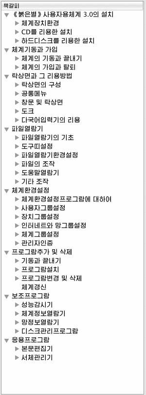
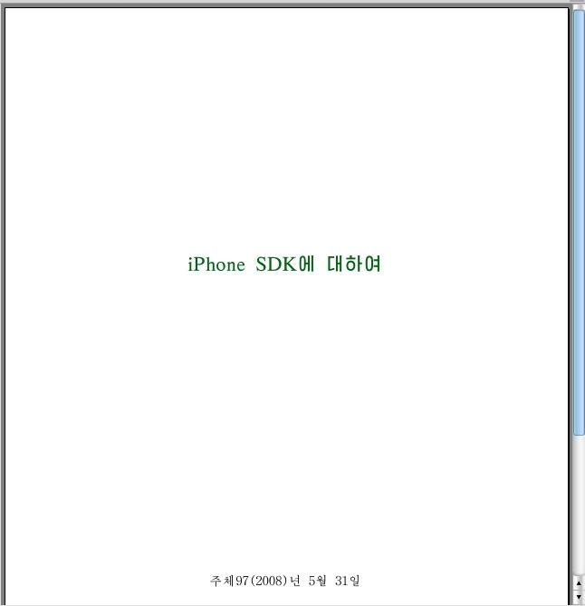

기본화면구성
이 프로그람은 책갈피창문, 도구띠들, 기본현시창문으로 되여있습니다.
- 책갈피창문
PDF파일이 가지고있는 책갈피정보들을 보여주며 해당한 정보를 눌러 기본현시창문에서 그에 대한 파일의 내용을 볼수 있습니다.

- 도구띠들
PDF파일을 관리 및 편집하기 위한 도구띠들이 있습니다.
- 기본현시창문

PDF파일의 내용을 현시하고 사용자 조작을 진행하는 창문입니다.
열기대화창을 리용하여 파일을 선택하면 해당한 파일의 내용이 기본현시창문에 현시됩니다.
사용자는 이 창문을 통하여 선택한 파일의 내용을 볼수 있으며 각종 조작들을 진행할수 있습니다.